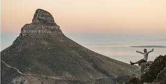
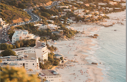
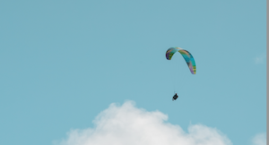

Going to Cape Town, you might not be sure of all the amazing things there are to do. Or maybe you're not even sure which activities you actually like. One thing you can be sure of though; is that there is something amazing to do for everybody! Check out your options and start planning your adventures!
If there's one thing Cape Town is known for, it's the excellent hiking trails. The city holds two of the most gorgeous mountains, Lions Head and Table Mountain, the latter even being one of the 7 natural wonders in the world! Ready to start climbing? Check the best hiking trails here!
Whether you're already a big surfer or beginner; for each and every one there's amazing surf in and around Cape Town. You'll find some great waves in town and about a 30 drive away down in Muizenberg or Blouberg. There are plenty of surfschools available to give you the lessons you need based on your level of experience. So don't worry, both beginners and advanced classes are open to welcome you, anytime you're ready to can jump in and learn some new skills! Check out the best spots here!
Whether you want to lay down, sip drinks and read books the whole day or are keen for a nice game of beach volley, Cape Town has it all. Depending on what you like for an ultimate beach day, choose your pick here!
This one is for you, all adventure seekers out there! Are you ready to explore Cape town.. FROM THE SKY?! This is your chance to look and the city and it's majestic coast lines from high up in the air. Book your tandem flights here!
Kalkbay is a little treasure not too far a drive away from the city. First of all the drive up there is absolutely breathtaking, so that's already worth the trip. When arriving in Kalkbay there are many cute little shops selling all kinds of souvenirs. For lunch you might want to consider the Brass Bell, a restaurant overlooking the ocean where they serve the absolute best sea food in the area. After dinner, definitely pop by Cape of Cuba, where you can have a nice spicy mango margherita with your toes in the sand. For more information and all the places to go in Kalkbay, click here!
Of course there are a lot of Safari's available in South Africa, but what would you think of exploring the sea life as well? Instead of taking a big boat, grab some kayaks and go out on the ocean to see what all lies beneath the water. Besides the beautiful view of the coastal lines and the majestic mountains you can see from the water, don't be surprised to spot pinguins, sealions, dolphins and even whales on your kayaking adventure. We highly recommend to go on an early cruise for sunrise to watch the sun pop up behind the mountains to turn the water surface a shiny golden. Book your kayaking experience here!